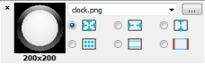

Edit properties of QML types
When you edit QML code in the code editor, you specify the properties of QML types. For some properties, such as colors and font names, this is not a trivial task. For example, few people can visualize the color #18793f. To easily edit these properties, use the Qt Quick toolbars.
When you select a QML type in the code and a light bulb icon appears ( ), select it to open a toolbar for changing the properties of that type.
), select it to open a toolbar for changing the properties of that type.
Preview images
Edit the properties of Border Image and Image items to scale and tile the images, replace them with other images, preview them, and change the image margins.

To preview an image, double-click it on the toolbar. In the preview dialog, you can zoom the image. Drag the image margins to change them.

Format text
Edit the properties of Text items to change the font family and size, as well as text formatting, style, alignment, and color.
Note: Move the mouse pointer over a color hex value in the code editor to see the color as a tooltip.
If a property is assigned an expression instead of a value, you cannot use the toolbar to edit it. The button for editing the property is disabled.

By default, font size is specified as pixels. To use points, instead, change px to pt in the size field.
Preview animations
Edit the properties of PropertyAnimation items and the items that inherit it to change the easing curve type and duration. For some curves, you can also specify amplitude, period, and overshoot values.

Select the play button to preview your changes.
Edit rectangles
Edit the properties of Rectangle items to change the fill and border colors and add gradients.

To add gradient stop points, click above the gradient bar. To remove stop points, drag them upwards.
Show toolbars immediately
To open toolbars immediately when you select a QML type, select Preferences > Qt Quick > QML/JS Editing > Always show Qt Quick Toolbar.

Pin toolbars
Drag the toolbar to pin it to another location. Select  to unpin the toolbar and move it to its default location.
to unpin the toolbar and move it to its default location.
To pin toolbars by default, select Pin Qt Quick Toolbar.
See also Creating a Qt Quick Application.